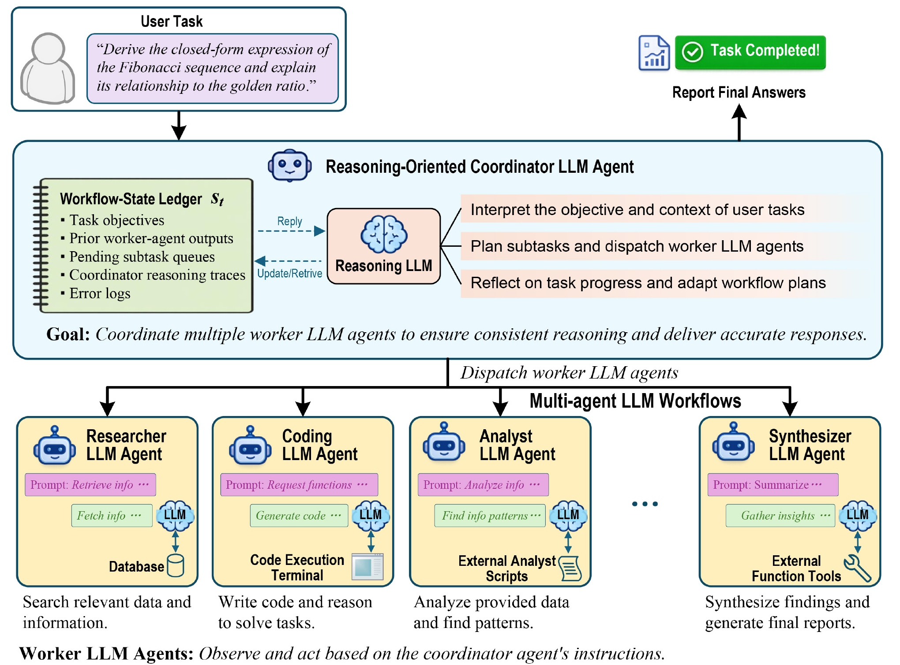
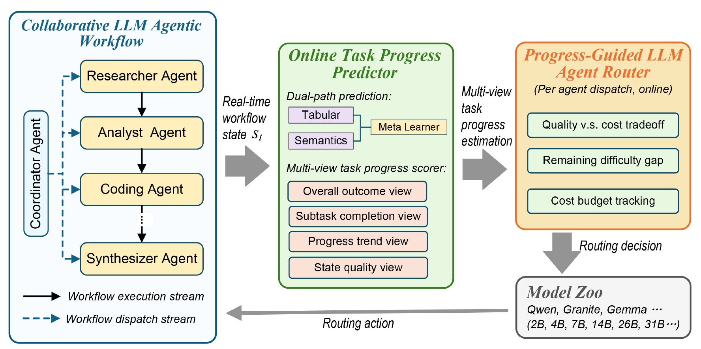
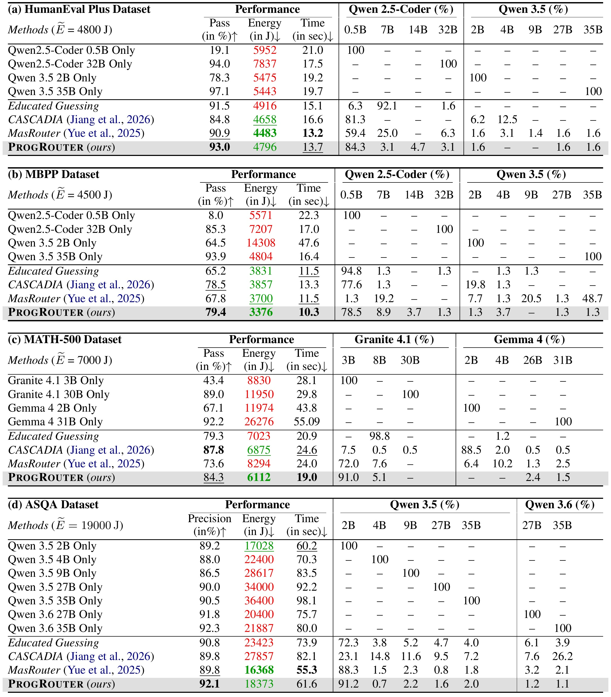
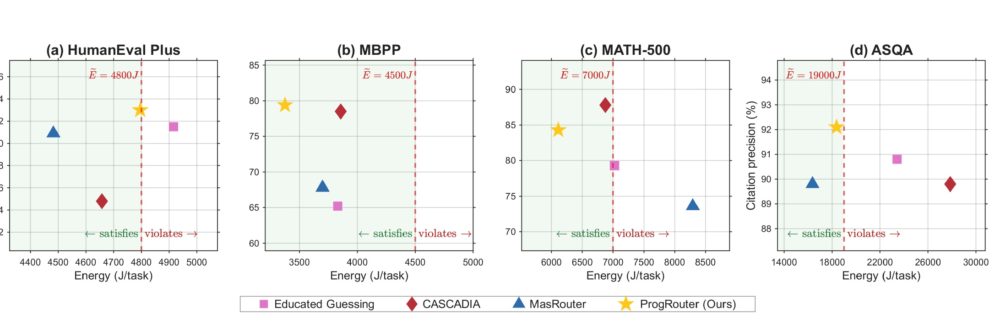
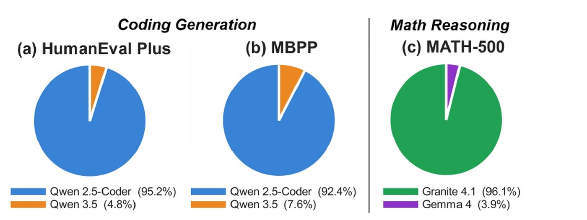
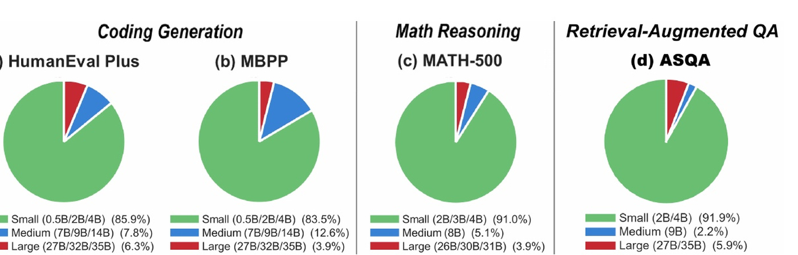
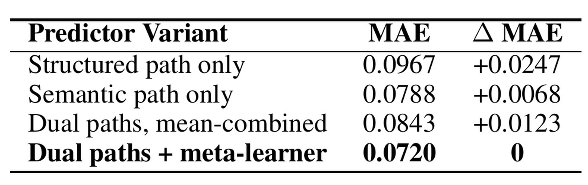
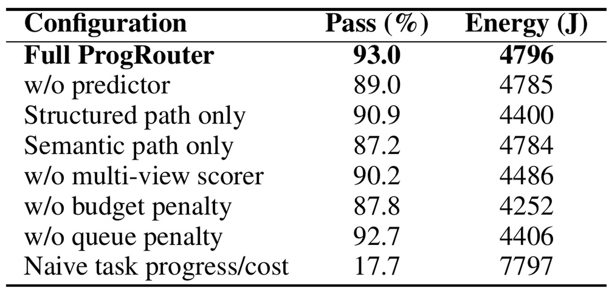

ProgRouter：质量—成本权衡下的在线进度引导多智能体编排
ProgRouter 由 Aston University 的 Songyuan Li 与 Queen Mary University of London、University of Exeter 的合作者共同完成，公开于 2026 年 8 月 26 日；作者在 arXiv 备注中说明论文已被 EMNLP 2026 Findings 接收。论文研究的不是“收到请求时给它挑一个模型”，而是多智能体工作流已经运行起来以后，如何在每一次 worker 调度时重新判断该用哪个 LLM。唯一论文入口为 arXiv:2608.25992。本轮未核验到独立的官方代码仓库或项目页，因此实现细节只能以论文描述为准。
现有级联路由通常只在请求到达时做一次模型选择，无法应对多智能体工作流中持续变化的任务进度、部分解质量、剩余难度与成本余量；进度估计一旦失准，要么会把预算浪费在不必要的强模型调用上，要么会因过度使用弱模型造成难以挽回的质量下降。
1. 背景和问题
多智能体 LLM 工作流把一个开放任务拆成多个子任务，让分析、编码、检索、综合等角色迭代合作。它的优势来自长程状态：后一步可以读取前一步的结果、发现错误、重分配任务并继续修正；它的成本也恰恰来自长程状态：每一步都可能重新携带上下文、调用不同模型和工具，弱模型失败后还会触发额外恢复步骤。因而，单次调用便宜并不等于整条工作流便宜，单次调用强也不等于预算内质量最好。论文把运行成本具体化为 GPU 能耗和执行时间，并要求既守住单个任务的上限，也控制跨任务流的长期平均能耗。
传统 cascade routing 的判断单位通常是完整 query。路由器先估计问题难度，再把简单请求交给小模型、困难请求交给大模型；CASCADIA 一类方法还允许执行信号不佳时逐级升级。这种设计对单轮服务有效，却把“难度”近似成请求到达时就能确定的属性。多智能体场景不同：同一个请求在规划阶段可能需要强推理模型，在资料抓取阶段只需要轻量模型，在综合阶段又可能因证据冲突重新变难。真正需要选择的不是一个覆盖全程的模型，而是状态 $s_t$、角色 $r_t$ 和候选模型 $m_t$ 之间随步骤变化的组合。
论文进一步把协调与路由分成两层。协调器负责理解用户目标、维护 ledger、决定下一个应该派发什么角色；ProgRouter 不替代这层规划，而是在角色已经确定后，从该角色可用的模型集合里选出本步实例。这个边界很重要：如果把“选角色”和“选模型”混在一个黑盒动作中，就很难判断失败来自规划不当、角色能力不匹配，还是所选模型不够强。ProgRouter 选择较窄的控制面，利用协调器已经维护的任务目标、已完成子任务、历史输出、错误记录和当前推理轨迹，将其变成可比较的进度信号。
问题还有两个延迟反馈。第一，最终任务是否成功往往只有工作流结束时才能确认，某一步调用究竟贡献了多少进度并没有天然标签；若只看最终 0/1 成功，路由器会面对长信用分配链。第二，系统同时服务一串未来未知的任务，当前任务多花的能耗是否值得，取决于之后的负载和预算压力。贪心地总选强模型会提早耗尽预算，保守地总选弱模型又可能因反复修复而更贵。论文因此需要一个密集的中间进度度量、一个预测候选模型边际收益的学习器，以及一个把单任务预算与长期预算同时带入决策的在线控制规则。
从研究问题看，ProgRouter 的新意不只在“把更多特征喂给 router”。它把 query-level 的静态分类改写成 stateful workflow 中的序列控制：动作立即生效且不可撤回，未来还有多少步骤并不已知，预测器又必须在运行中从冷启动逐步成熟。这种表述使论文与典型 LLM router 的离线准确率目标不同。这里的核心评价不应只是“是否选中了离线最强模型”，而应是最终成功率、全链能耗、时延和预算违约能否共同改善。
论文选择代码生成、数学推理和检索增强长回答三类场景来覆盖不同的进度可观测性。HumanEval Plus、MBPP 有单元测试，MATH-500 有最终答案匹配，ASQA 则没有同样清晰的逐步正确性反馈，只能从检索证据、引用支持和中间综合质量推断进展。若同一套路由机制能跨越这些任务，说明可迁移的部分是“预测边际进度并做预算控制”；但每个领域如何定义完成里程碑、粗粒度状态和质量信号仍然需要适配，这也是论文后续最重要的边界之一。
另一个容易忽略的点是，论文所说的“质量—成本权衡”不是把某个离线 benchmark 分数除以价格。工作流失败会改变后续步骤数，模型加载和长上下文会改变每次调用能耗，协调器的修复动作又可能把早期便宜决策的成本延后。因此路由动作、状态转移和累计成本构成闭环。只有逐步观察真实状态，系统才可能识别“现在多花一次强模型成本可以避免后续多轮恢复”与“任务已经接近完成，继续调用强模型边际收益很小”这两种相反情形。ProgRouter 的所有组件都围绕这一区分展开。
2. 方法
2.1 从工作流账本到逐步模型选择
论文把一个工作流写成 $w=\{C,\mathcal{R},\mathcal{M}\}$：$C$ 是维护 ledger 的协调器，$\mathcal{R}$ 是 worker 角色集合，$\mathcal{M}$ 是不同家族和规模的模型池。每一步先由协调器根据状态 $s_t$ 选择角色 $r_t$，再由路由策略 $\pi(s_t,r_t)$ 从子集 $\mathcal{M}_{r_t}$ 选出模型 $m_t$，执行后得到 $s_{t+1}$。ProgRouter 的控制对象是“既定角色在当前步骤由哪个模型实例化”，而不是重做协调器的任务分解。 这让模型选择可以复用协调器已有的状态信息，也让路由动作保持轻量。

Figure 1 中，上半部是 reasoner 驱动的协调器：它从用户目标出发，将任务、历史输出、待办队列、推理轨迹和错误写入状态账本，再解释目标、规划子任务并按需调整。下半部是研究、编码、分析、综合等 worker，它们接收角色提示并调用数据库、代码执行环境或外部工具。图中的实线是工作流执行顺序，虚线是角色派发。关键不是角色数，而是账本把“已完成什么、哪里卡住、前次调用产生了什么”暴露给在线路由器。图也说明强协调器始终存在：实验里协调器固定使用 Qwen3-Coder-Next 80B-A3B，ProgRouter 优化的是 worker 侧模型调用，因此论文报告的能耗包含协调器后，节省空间并非来自把所有大模型都移除。
目标函数同时包含任务成功与三层约束：
符号解释：$W$ 是连续服务的任务数，$T_w$ 是任务 $w$ 的 worker 调度步数，$\mathcal{P}(w)$ 是最终成功指示，$E(m_t)$ 与 $\Gamma(m_t)$ 分别表示本步模型调用的能耗和时间；$E_w$、$\Gamma_w$ 是单任务预算，$\widetilde E$ 是跨任务长期平均能耗上限。前两项避免一个任务无限消耗资源，最后一项防止系统长期偏向昂贵模型。论文原文在文字说明中对 $E$ 和 $\Gamma$ 的“time/cost”称谓有一处易混，但公式与实验统一把 $E$ 用作能耗、$\Gamma$ 用作时间。

Figure 2 把信息流压成三段。左侧协调器按任务状态派发角色，同时把实时 ledger 交给中间的进度预测器；预测器既读取结构化表格信号，也读取状态语义，并以多视角 scorer 提供当前进度；右侧路由器把预测增益、剩余难度和预算跟踪合并成每个候选模型的分数，选择后再把动作送回工作流。图中底部的回路表明它不是一次性分类：一次路由改变下一个状态，下一个状态又改变下一次路由。训练时系统从已经执行的状态转移学习；推理时只需对当前候选模型做轻量树模型评分，不重新训练协调器或基础 LLM。三种颜色也对应后文的三类可检验对象：绿色模块决定进度是否可观测，紫色路径决定边际增益是否可预测，橙色模块决定预测值如何在预算约束下转化为动作；任何一层失准都会传导到下一步状态。
2.2 多视角任务进度表示
最终成功太稀疏，ProgRouter 先把当前状态变成 $g(s_t)\in[0,1]$。它以四个粗状态作锚点：invalid、recoverable、partial success、complete；再补上三种细信号。$r_t$ 衡量子任务和约束满足比例，$d_t$ 观察近期若干步是在前进、停滞还是倒退，$e_t$ 判断最新状态变化在语义和结构上是否有意义，例如是否真的解决了新子任务，而不是仅生成更多文本。这样，失败但可恢复的状态不会与完全无效状态混为一谈，接近完成但出现小回退的状态也不会被最终 0/1 标签抹平。
符号解释：$c_t$ 是当前粗状态，$b(c_t)$ 是该状态的基础分；$\alpha_{c_t}$、$\beta_{c_t}$、$\gamma_{c_t}$ 是随粗状态变化的非负权重。$r_t$、$d_t$、$e_t$ 分别对应完成度、趋势和状态质量。分层聚合的直觉是先用规则性强的 coarse regime 防止分数漂移，再在同一 regime 内用细信号拉开差异。它提供了在线监督的共同尺度，但不是完全端到端学习：迁移到新领域时仍要定义哪些里程碑可观察、四类状态如何判定以及三种子分数如何计算。
这个 scorer 既是优势也是脆弱点。代码任务可以把测试通过率、错误类型和已实现函数映射成状态，ASQA 却要依赖证据覆盖、引用支持和回答整合质量。若领域适配器把表面长度误当进度，后面的 predictor 会忠实学习错误标签；若粗状态边界过硬，接近边界的两个 ledger 可能获得不连续分数。因此，论文证明的是在给定 scorer 设计下的在线路由有效性，还没有证明进度表示可自动发现或跨域零样本迁移。
2.3 双路径任务进度预测
当前进度只回答“已经走到哪里”，路由还要回答“调用候选模型后能前进多少”。论文令 $P_{\Theta}$ 同时看状态和候选模型，输出下一步边际进度增益。结构化路径输入当前分数、子任务完成状态、近期趋势、历史派发以及候选模型等表格特征，使用随机森林或 XGBoost 一类树回归器；语义路径则让协调器生成紧凑状态摘要，用 MiniLM 一类轻量句向量模型编码，再交给另一棵树模型。前者擅长稳定、可枚举的信号，后者捕捉日志中难以手工离散化的错误和瓶颈。
符号解释：$\phi_{\mathrm{str}}$ 与 $\phi_{\mathrm{sem}}$ 是结构化和语义特征提取器，$P_{\mathrm{str}}$、$P_{\mathrm{sem}}$ 是两条回归路径，$P_{\mathrm{meta}}$ 是自适应融合两种估计的元学习器，$\hat y_t(m_t)$ 是“在状态 $s_t$ 调用模型 $m_t$ 后预计增加的进度”。它不是固定平均：显式里程碑可信时可以更依赖结构化路径，日志中有隐含错误而表格信号稀疏时可以更依赖语义路径。实验的离线消融会检验这个自适应门是否确实优于平均。
训练和执行的时间关系要分清。系统起步时没有预训练的 progress predictor，先以 $\varepsilon$-greedy 随机探索候选模型，执行后由 scorer 计算真实状态差，样本进入持久 buffer；数据积累后周期更新三层树模型，并逐步降低 $\varepsilon$。稳定阶段仍是在线服务，只是报告主结果取 predictor 达到成熟条件后的剩余任务流。这意味着结果不是“零样本上线第一天”的性能，也不是把完整评测集反复训练；每个任务只按固定随机顺序处理一次，模型参数、buffer 和预算队列跨任务保留。
2.4 虚拟成本队列、预算惩罚与在线学习
跨任务长期预算不能仅靠单个任务的硬阈值处理。ProgRouter 借用 Lyapunov drift-plus-penalty 思路，引入虚拟队列 $Q_w$ 记录历史平均能耗超支。一个任务结束后，如果其累计能耗高于长期目标，差额进入队列；低于目标的后续任务可以消化这笔“债务”。队列越长，未来选择高能耗模型的惩罚越强，这让当前决策感知系统过去是否已经透支，而不需要知道未来任务分布。
符号解释：$Q_w$ 是处理任务 $w$ 前的预算债务，$\widetilde E$ 是允许的长期平均能耗，$V$ 控制质量收益相对成本压力的权重；$\widetilde P$ 是候选模型的进度价值，$1-g(s_t)$ 是剩余进度缺口，$\hat y_t$ 是预测增益；执行后的真实增益 $y_t$ 或 $\Delta_t$ 则作为 predictor 的训练目标。同样的预测增益在任务刚开始时价值更高，在接近完成时价值更低，因此强模型不会仅因绝对增益高就被反复调用。
单任务预算用两个指数系数表达。随着已经消耗的时间或能耗接近上限，下一次同样昂贵的调用会承担更高惩罚：
符号解释：$c_t^{\Gamma}$ 与 $c_t^E$ 分别是时间和能耗的动态惩罚系数，分母 $\Gamma_w$、$E_w$ 是任务级预算；$Q_w$ 施加跨任务压力，$\widetilde P$ 奖励剩余难度下的预测进度，最终从角色允许的模型集合 $\mathcal{M}_{r_t}$ 中取最大分数。这个分数不是“预测增益除以成本”的局部比值。 它同时保留剩余进度、当前任务预算位置和历史预算债务；消融中朴素 progress/cost 虽使用同一预测器，却因持续偏爱便宜但能力不足的模型而陷入停滞和反复恢复。
部署时，候选模型的结构化与语义特征需要逐一计算，树模型开销相对 LLM 推理较小；真正的系统成本在于维护可比较的能耗/时延画像、生成可靠状态摘要以及冷启动探索。每步选择立即生效，不能在看到结果后撤回，因此 estimator 的校准误差会直接影响后续轨迹。论文没有给出分布突变下的恢复速度，也没有把模型加载、并发抢占和队列等待显式纳入路由状态，这些因素在共享集群中可能比单机实验更复杂。
3. 实验结果
3.1 数据集、系统和能耗口径
实验覆盖四个 benchmark。HumanEval Plus 使用全部 164 道代码题，以隐藏测试全部通过作为成功；MBPP 随机抽取 200 道基础 Python 题，同样用 pass rate；MATH-500 随机抽取 200 题，用最终答案精确匹配；ASQA 随机抽取 100 个歧义检索问答，以 citation precision 衡量生成答案的引用是否真正支持内容。代码任务的模型池是 Qwen 2.5-Coder 0.5B/7B/14B/32B 与 Qwen 3.5 2B/4B/9B/27B/35B，数学任务使用 Granite 4.1 3B/8B/30B 与 Gemma 4 2B/4B/26B/31B，ASQA 使用 Qwen 3.5 与 Qwen 3.6 的七个规模。比较对象包括 query-level 的 MasRouter、停滞后升级的 CASCADIA、只依赖历史表现的 Educated Guessing，以及固定单模型策略。
系统建立在 AG2 0.11.3 与 Ollama 0.24.0 上，运行于 NVIDIA RTX PRO 6000 Blackwell；协调器固定为 Qwen3-Coder-Next 80B-A3B。四个长期平均能耗预算分别为 HumanEval Plus 4800 J、MBPP 4500 J、MATH-500 7000 J、ASQA 19000 J。作者用 NVML 每 100 ms 采样板卡功率，不用 token 或 FLOP 代理，并把 worker、协调器、模型加载、prefill、解码、KV-cache 和 GPU runtime 开销纳入；CPU 编排、主机内存、存储和网络能耗被排除。
符号解释：$P(t)$ 是 NVML 观测到的 GPU 板卡功率，积分得到执行片段的真实能量；$I_{\mathrm{load}}$ 表示是否发生冷加载，$E_{\mathrm{load}}$ 是加载能耗，$E_{\mathrm{prefill}}$ 随上下文长度变化，$e_{\mathrm{decode}}$ 是单位生成 token 的解码能耗，$N_{\mathrm{gen}}$ 是生成量。物理测量比按参数量估算更贴近实际，但单机板卡边界无法代表多节点网络、CPU 工具和存储检索的完整能耗。
3.2 主结果：质量、能耗和时延必须一起读
ProgRouter 在 HumanEval Plus 上取得 93.0% pass、4796 J、13.7 s；MBPP 为 79.4%、3376 J、10.3 s；MATH-500 为 84.3%、6112 J、19.0 s；ASQA 为 92.1% citation precision、18373 J、61.6 s。四项都满足各自长期预算。在 HumanEval Plus，MasRouter 的 90.9% 略低但能耗也更低，CASCADIA 为 84.8%；在 MBPP，ProgRouter 同时获得可行方法中最高 pass、最低能耗和最短时延；在 MATH-500，CASCADIA 的 87.8% 高于 ProgRouter，但 ProgRouter 以更低能耗和更短时间换取 3.5 个百分点的质量差；在 ASQA，ProgRouter 比 MasRouter 与 CASCADIA 的 89.8% 高 2.3 个百分点。

Table 1 必须按“先看预算是否可行，再在可行集合中比较质量、能耗和时间”的顺序读。绿色能耗满足 $\widetilde E$，红色表示违约；粗体和下划线只在可行方法之间标最好与次好。固定大模型通常质量高但单次成本昂贵，例如 MATH-500 的 Gemma 4 31B 达到 92.2% 却消耗 26276 J；固定小模型也未必省能耗，HumanEval Plus 的 Qwen2.5-Coder 0.5B 只有 19.1% 且耗 5952 J，因为能力不足带来更多恢复调用。表中最有说服力的不是 ProgRouter 在所有质量列都第一——它并没有——而是它在四个预算下都可行，并在 MBPP/ASQA 取得质量领先，在 MATH-500 明确展示质量换能耗的选择。
这张表也揭示基线的不同失败方式。Educated Guessing 在 MATH-500 有 98.8% 调用落到 Granite 4.1 8B，79.3% pass 但 7023 J 略微违约，说明历史最优不能识别当前步骤是否真的需要该模型。CASCADIA 在 HumanEval Plus 大量从小模型起步，可能先付出无效调用再升级，最终 84.8% 明显落后。MasRouter 在任务开始时配置全程模型组合，MATH-500 消耗 8294 J 仍只有 73.6%。ProgRouter 的优势来自按状态重算，而不是单纯偏好某个家族。
3.3 Pareto 前沿与基线失败模式

Figure 3 的横轴是每个任务的能耗，纵轴是 pass rate 或 citation precision，红色虚线是预算，左侧浅绿色区域才是可行域。HumanEval Plus 中黄色星标 ProgRouter 靠近预算线并拥有可行点里的最高质量；MBPP 中它同时更靠左、更靠上，形成明显支配；MATH-500 中 CASCADIA 更高但接近预算线，ProgRouter 更靠左，呈现真实的 Pareto 权衡；ASQA 中 ProgRouter 在预算线左侧且质量高于三种自适应基线。图避免了“节能百分比”式单值宣传：不同任务的最优折衷位置不同，系统拥有的预算才决定哪个点更合适。
图里同样能看到固定策略为何没有成为可行基线。作者在 Table 1 中报告所有固定模型策略几乎都会越过能耗约束；最小 ASQA 模型虽满足预算，却牺牲 citation precision。对工程部署而言，这说明应比较完整工作流的恢复次数和上下文累积，而不能仅按参数量或每 token 价格排序。不过，Pareto 图基于稳定阶段汇总值，没有误差条、不同随机流顺序的方差或置信区间，邻近点的差异是否统计显著仍未给出。
3.4 路由分布：小模型承担多数步骤并不等于固定小模型

Figure 4 显示代码任务中 Qwen 2.5-Coder 占 HumanEval Plus 95.2%、MBPP 92.4%，数学任务中 Granite 4.1 占 96.1%。这不是简单说明某家族“更强”，而是说明 router 在特定角色和任务域上形成稳定专门化：编码模型家族承担大部分代码步骤，Granite 承担大部分数学步骤，另一个家族只在少数状态下补位。家族选择已经高度集中，因此 ProgRouter 的细粒度收益更多可能来自同一家族内部尺寸切换与关键步骤例外，而不是频繁跨家族跳转。三个饼图的少数扇区仍然不可忽略，因为正是这些小比例调用可能承担阻塞解除；若只保留主家族，最终成功率未必按比例小幅下降。论文没有按角色拆分这些比例，尚不能判断稀少的跨家族调用集中在哪类错误恢复或综合步骤。

Figure 5 进一步显示，small 模型承担 HumanEval Plus 85.9%、MBPP 83.5%、MATH-500 91.0%、ASQA 91.9% 的调用；medium 分别约 7.8%、12.6%、5.1%、2.2%，large 分别约 6.3%、3.9%、3.9%、5.9%。多数步骤交给小模型却仍能保持主结果，说明工作流里大量子任务并不持续需要最大能力；少量中大模型调用则可能负责阻塞解除、复杂推理或最终整合。关键对照是固定小模型：后者在失败时会产生更多调用，能耗和质量都可能更差。分布图支持“选择性升级”而非“全面降级”，但它没有展示同一任务内部的调用时间序列，无法直接确认大模型是否确实出现在预测的高剩余难度位置。
3.5 消融：预测准确不等于路由有效

Table 3 先隔离 predictor 的拟合质量。结构化路径单独使用时 MAE 为 0.0967，语义路径为 0.0788，说明状态摘要包含表格特征未覆盖的信息；两条路径简单平均反而是 0.0843，高于语义单路，证明“多一种信号”本身不保证更好。双路径加 meta-learner 得到最低 MAE 0.0720，比语义单路再降 0.0068。差值列以完整模型为零点，结构化单路的退化最大，简单平均也比语义单路多损失 0.0055，说明元学习器学到的不是恒定权重。这个结果支持自适应融合，但只在 HumanEval Plus 上报告，且没有分状态 regime 的误差，读者无法判断元学习器究竟在 recoverable、partial success 还是其他状态获得主要收益。

Table 4 把离线预测质量放回完整控制环。完整 ProgRouter 为 93.0% / 4796 J；去掉 predictor 后降至 89.0% / 4785 J，说明进度增益预测主要影响质量而非简单提高能耗。仅结构化路径为 90.9% / 4400 J，仅语义路径为 87.2% / 4784 J，两者的端到端排序与离线 MAE 不完全等价：预测误差更低不保证路由决策更稳。去掉 multi-view scorer 得到 90.2% / 4486 J，证明仅靠测试通过率视角不足；去掉 queue penalty 仍有 92.7% / 4406 J，有限任务流里质量变化很小，符合队列主要约束长期漂移的定位。
最醒目的行是 naive task progress/cost：它与完整方法共享预测增益，却只有 17.7% pass 并消耗 7797 J。贪心比值持续选择便宜但能力不足的模型，工作流停滞后反复恢复，最终既不省能耗也不保质量。这一消融直接支持 Eq. (12) 中剩余进度缺口、单任务预算位置和跨任务队列不能被一个局部“收益/成本”比值替代。不过，“去掉 budget penalty”反而只有 4252 J 且质量降到 87.8%，说明各惩罚项的效果存在耦合，不能把某一项的删除结果简单解释为它只负责降低成本。
整体而言，实验覆盖了结构化任务和开放检索问答，能耗又使用物理测量，证据链比只报 API 价格完整。但主结果取在线 predictor 稳定后的剩余任务流，冷启动期的用户体验、探索成本和达到稳定所需样本数没有在主表展示；四个 benchmark 的随机抽样也未报告多 seed 方差。因而论文足以说明机制在这套单机顺序流中有效，还不足以断言任何生产负载都能得到相同 Pareto 改善。
4. 总结
4.1 我的判断
ProgRouter 最有价值的转换，是把 LLM routing 从请求级分类提升为工作流内部的在线控制问题。它利用协调器已有 ledger 构造当前进度，用双路径预测候选模型的边际增益，再以虚拟队列和动态惩罚把长期平均预算与单任务余量带入逐步决策。主实验没有声称在每个数据集上质量绝对最高，而是展示四个预算内都可行，并通过朴素 progress/cost 的失败说明“预测进度”必须与“如何决策”共同设计。对已经有显式 coordinator/worker 架构的 Agent 系统，这个控制面相对清晰：无需改动基础模型，先把可观察状态、模型画像和预算状态接入路由层。
工程复现应优先保证三件事。第一，ledger 要包含可比较的完成里程碑、错误类型与历史派发，而不是无结构聊天记录；第二，能耗和时延画像要覆盖冷加载、prefill 和解码，否则预算惩罚会用错成本；第三，在线评测必须把 warm-up 与 steady state 分开，并保留任务顺序和探索比例，避免把冷启动代价隐藏在最终均值之外。若服务成本只能用货币或 GPU 时间表示，框架仍可替换 $E(m_t)$ 的定义，但需要重新校准长期预算和单任务惩罚。
4.2 局限与风险
- 进度 scorer 依赖领域里程碑和规则性粗状态。论文只验证代码、数学和 ASQA；网页导航、工具型问答以及长期记忆任务能否获得同样可靠的 $g(s_t)$ 尚未实证。
- 主结果来自 predictor 稳定后的任务流，没有报告达到稳定的样本数、冷启动期间质量/能耗曲线及多随机种子方差，部署初期的代价边界不清楚。
- 实验在单台 RTX PRO 6000 Blackwell 上用顺序任务流运行。多租户集群中的排队、并发、模型换入换出、网络与工具调用成本未进入路由状态，成本模型可能发生系统性偏移。
- 协调器固定为 80B-A3B，并且由它生成语义摘要。若协调器摘要遗漏关键错误，结构化与语义路径可能同时被污染；论文没有分析 scorer 噪声、摘要幻觉或 adversarial ledger 对路由的敏感性。
- 消融集中在 HumanEval Plus，ASQA 这类弱反馈任务缺少对应的 predictor 和 routing 组件消融，因此跨域有效性主要由主结果支撑，机制级证据仍不对称。
- 模型池和负载均为本地可控配置，未讨论模型版本更新、能力漂移或 API 限流。在线 predictor 可能把旧模型经验继续用于新版本，造成短期错误路由。
4.3 后续跟进
- 跟踪代码与项目页是否公开，重点核验多视角 scorer 在四个领域的具体规则、$\varepsilon$ 衰减、buffer 更新频率以及 $V$ 和预算系数的设定；这些信息决定结果能否复现。
- 设计包含 cold start、稳定期和分布突变的时间序列评测，报告每阶段的成功率、累计能耗、队列长度和恢复速度，而不是只给稳定阶段均值。
- 在 ASQA、网页导航和工具调用任务上分别做 scorer 噪声与摘要缺失压力测试，观察结构化路径、语义路径和 meta-learner 在弱反馈场景是否仍互补。
- 将 energy-only 目标扩展为美元成本、尾延迟、显存占用和碳强度的多约束队列，并验证多个约束同时接近上限时路由分数是否稳定。
最终看，ProgRouter 提供的是一套可解释的在线路由骨架，而不是免配置的通用路由器。它的证据支持“进度感知 + 预算状态”优于一次性路由和局部收益/成本贪心；真正走向生产还要补齐自动进度学习、冷启动、并发资源和分布漂移。本文为技术调研与学习总结，不构成对论文质量、模型采购或生产上线的确定性建议。